Kuliner Khas
Bakso, Mie Ayam, dan Es Kelapa Muda.
Bakso

Mie Ayam

Keindahan alam, kesejukan hutan, dan cerita nostalgia dalam satu tempat.
Jelajahi Sekarang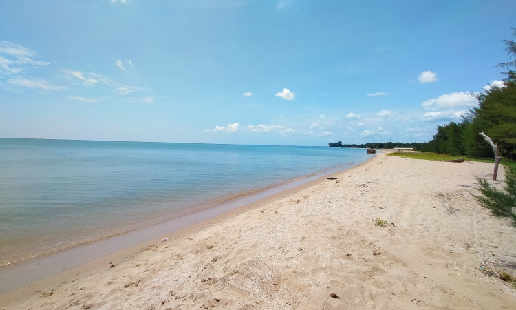
Pantai Sowan merupakan destinasi wisata alam di Kabupaten Tuban yang menawarkan perpaduan unik antara pantai dan hutan rindang. Tempat ini cocok untuk menikmati udara segar, bersantai bersama keluarga, dan berburu foto menarik.
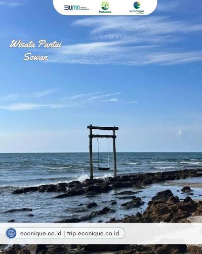
Cocok untuk bersantai menikmati suasana alam.
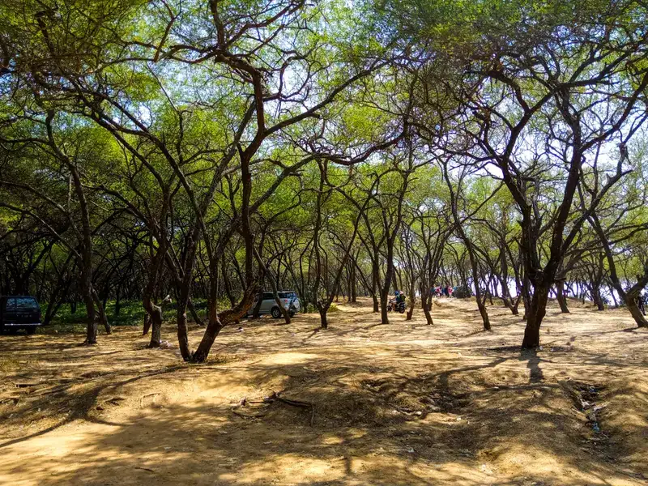
Kawasan rindang yang menjadi ciri khas Pantai Sowan.
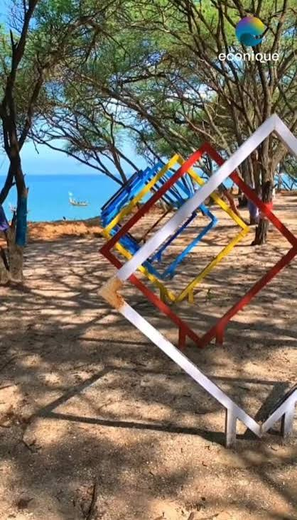
Beragam sudut menarik untuk berfoto.
Nikmati panorama matahari terbenam.
Bakso, Mie Ayam, dan Es Kelapa Muda.
Pantai yang sejuk dan nyaman untuk keluarga.
Spot fotonya banyak dan pemandangannya indah.
Tempat yang cocok untuk bersantai saat akhir pekan.
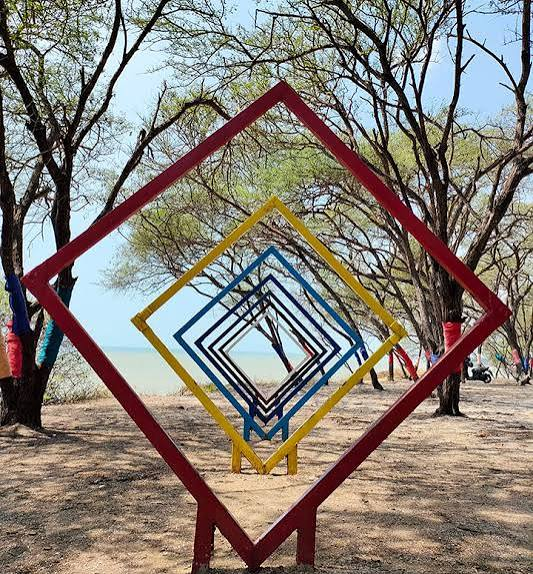
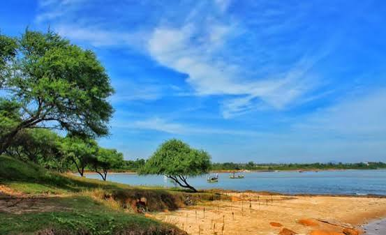
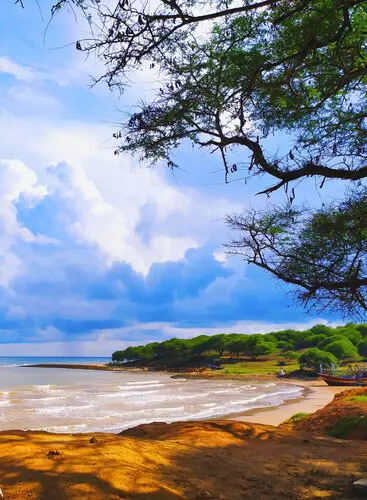
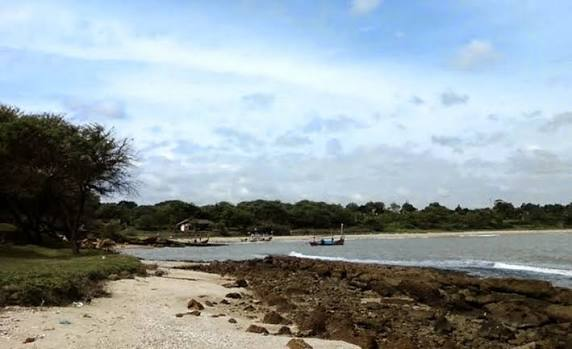
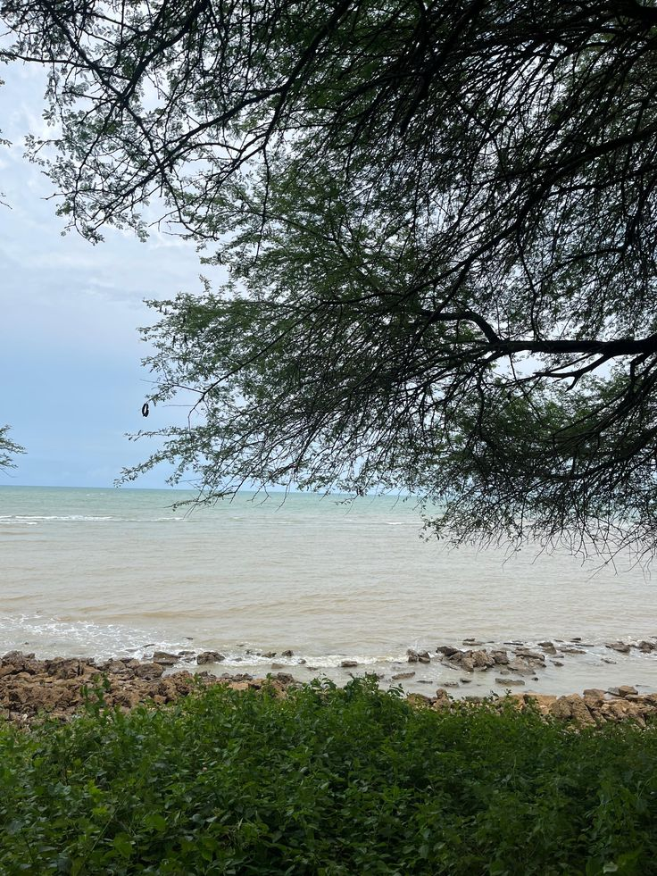
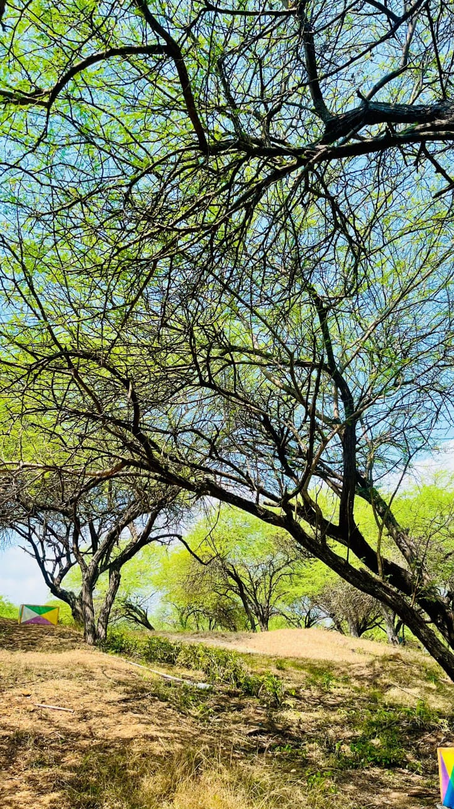
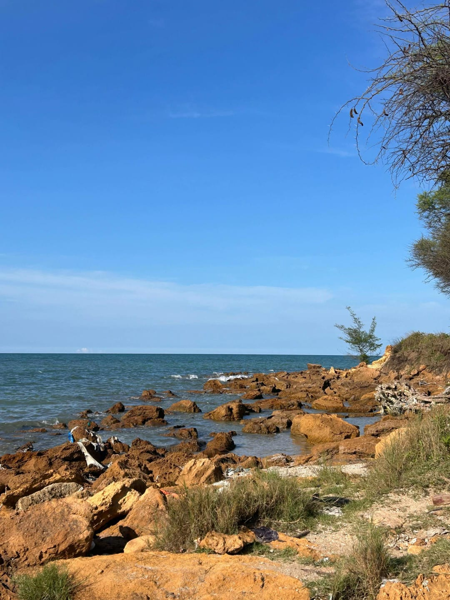
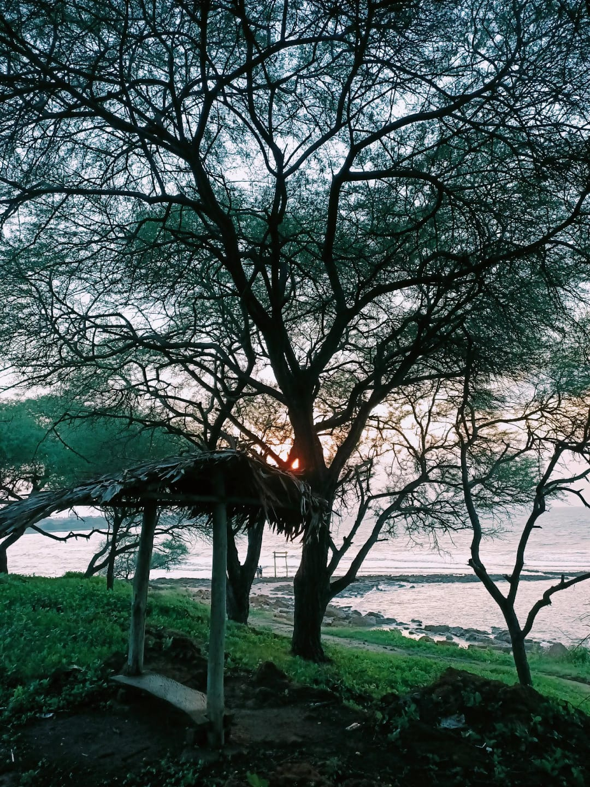
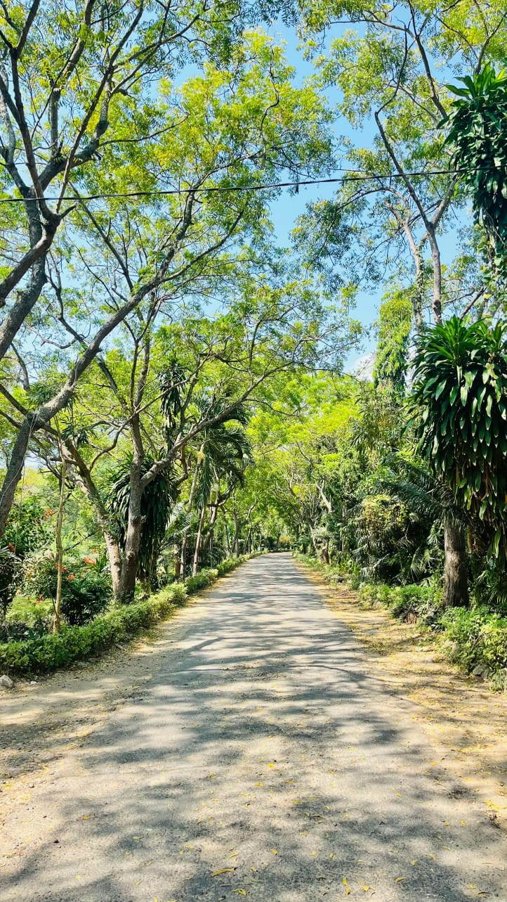

Rp10.000 per orang pada hari biasa (weekday) dan Rp12.000 hingga Rp12.500 per orang pada akhir pekan (weekend) atau hari libur nasional
Buka setiap hari pukul 08.00 - 17.00 WIB.
Topi, air minum, kamera atau ponsel untuk berfoto, alas kaki yang nyaman, serta perlengkapan pribadi secukupnya.
Pagi hari pukul 08.00–10.00 WIB atau sore hari pukul 15.00–17.00 WIB saat cuaca lebih sejuk dan pemandangan lebih indah.
Pengunjung dapat berjalan santai menyusuri kawasan hutan rindang yang menjadi ciri khas Pantai Sowan sambil menikmati udara segar dan suasana alam yang menenangkan.
Berbagai sudut menarik mulai dari deretan pepohonan, pemandangan pantai, hingga area terbuka dapat dimanfaatkan sebagai latar foto yang indah dan estetik.
Wisatawan dapat duduk bersantai sambil menikmati deburan ombak, angin pantai yang sejuk, serta suasana tenang yang cocok untuk melepas penat.
Menjelang sore hari, pengunjung dapat menikmati pemandangan matahari terbenam yang indah sambil mencicipi aneka kuliner khas dan hidangan laut yang tersedia di sekitar kawasan wisata.
Lihat keseruan dan keindahan Pantai Sowan melalui video kami di TikTok.
🎵 Lihat Video TikTok